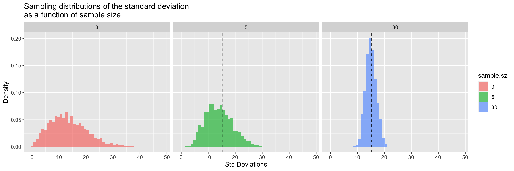
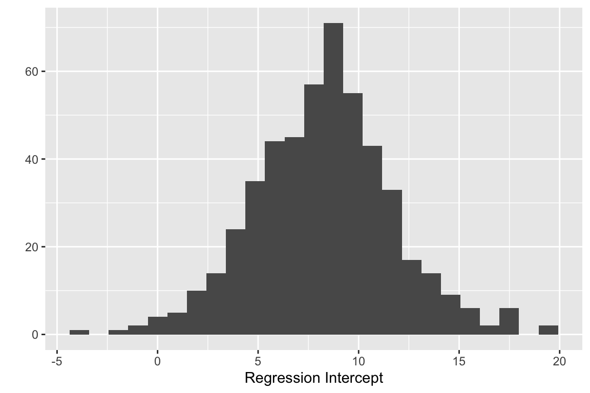
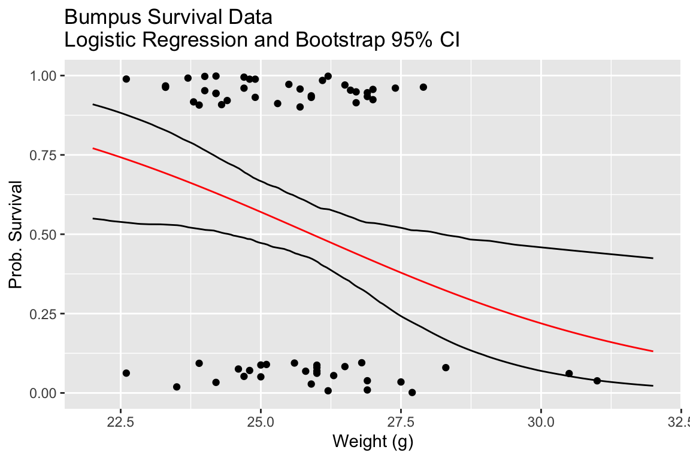
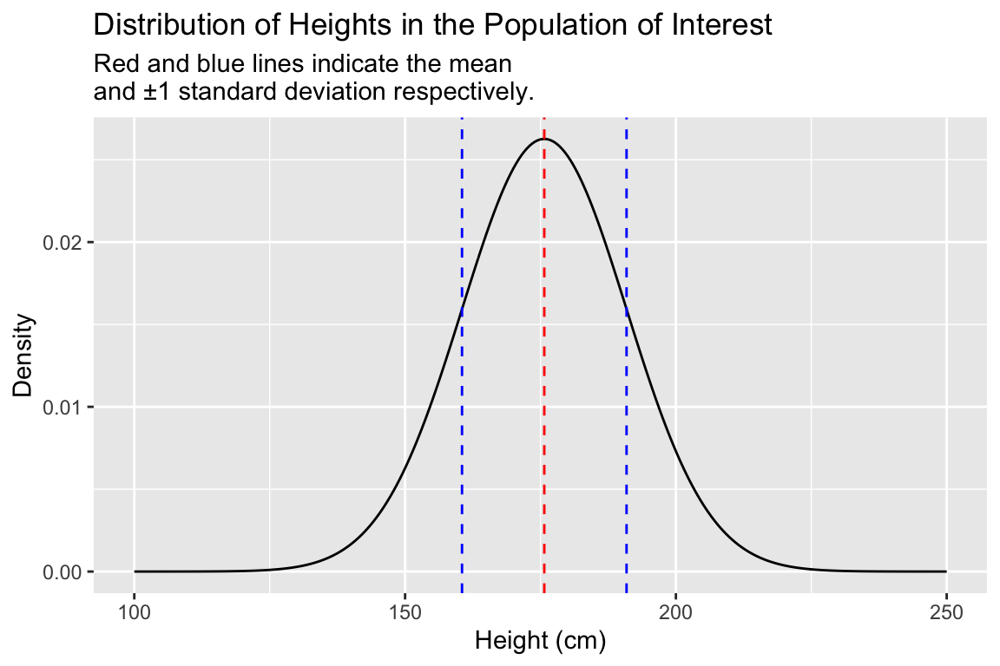
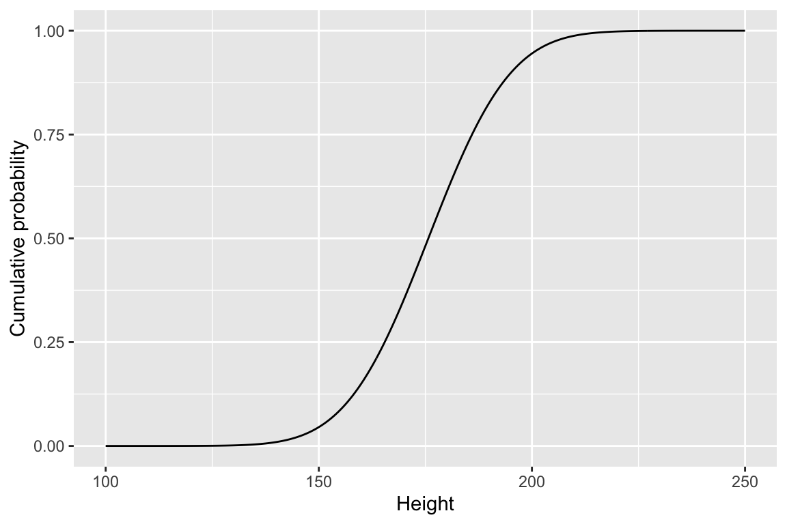

Chapter 18 Simulation I: Sampling distributions
In our final two class sessions we will explore how we can use R to carry out statistical simulations. Such simulations can be useful for a variety of purposes, such as understanding classical results in statistical inference, deriving novel results for unusual statistics or underlying distributions, or to help design experiments. More generally, simulation is a useful tool for honing our intuition or revealing key properties about complex systems.xs
In this chapter we will focus on how we can use simulation to derive well known and not so well known results regarding the sampling distributions for a variety of statistics.
18.1 Sampling distrubtions
Usually when we collect biological data, it’s because we’re trying to learn about some underlying “population” of interest. Population here could refer to an actual population (e.g. all males over 20 in the United States; brushtail possums in the state of Victoria, Australia), an abstract population (e.g. corn plants grown from Monsanto “round up ready” seed; yeast cells with genotypes identical to the reference strain S288c), outcomes of a stochastic process we can observe and measure (e.g. meiotic recombination in flies; rainfall per square meter in the Brazilian amazon), etc.
It is often impractical or impossible to measure all objects/individuals/instances of a population of interest, so we take a sample (ideally a random sample) from the population and make measurements on the variables of interest in that sample. We do so with the hope that the various statistics we calculate on the variables of interest in that sample will be useful estimates of those same statistics in the underlying population.
However, we must always keep in mind that the statistics we calculate from our sample will almost never exactly match those of the underlying population. That is when we collect a sample, and measure a statistic (e.g. mean or standard deviation or skew or…) on variable \(X\) in the sample, there is a degree of uncertainty about how well our estimate matches the true value of that statistic in the underlying population. We know that if we took another random sample from the same population, and re-calculated the statistic of interest, we’re likely to obtain an estimate that differs from that in our first sample. We can imagine repeating this procedure again and again a large number of times, recording our estimate each time which would yield a new distribution, which we’ll call a sampling distribution. A sampling distribution is the probability distribution of a given statistic for samples of a given size. Sampling distributions are a linchpin at the heart of statistical inference, how we quantify the uncertainty associated with statistics and use that information to test hypotheses and evaluate models.
Traditionally sampling distributions were derived analytically. In this class session we’ll see how to approximate sampling distributions for any statistic using computer simulation.
18.2 Simulating sampling from an underlying population
To illustrate the concept of sampling distributions, we’ll simulate drawing samples for an underlying population that we’re trying to estimate statistics about. This will allow us to compare the various statistics we calculate and their sampling distributions to their “true” values.
Let’s simulate a population consisting of 25,000 individuals with a single trait of interest – height (measured in centimeters). We will simulate this data set based on information about the distribution of the heights of adult males in the US from a study carried out from 2011-2014 by the US Department of Health and Human Services1.
# male mean height and sd in centimeters from USDHHS report
true.mean <- 175.7
true.sd <- 15.1918.3 Seeding the pseudo-random number generator
When carrying out simulations, we employ random number generators (e.g. to choose random samples). Most computers can not generate true random numbers – instead they use algorithms that approximate the generation of random numbers (pseudo-random number generators). One important difference between a true random number generator and a pseudo-random number generator is that we can regenerate a series of pseudo-random numbers if we know the “seed” value that initialized the algorithm. We can specifically set this seed value, so that we can guarantee that two different people evaluating this notebook get the same results, even though we’re using (pseudo)random numbers in our simulation.
# make our simulation repeatable by seeding RNG
set.seed(20190409)18.4 Libraries
library(tidyverse)
library(magrittr)
library(stringr)18.4.1 Properties of the underlying population
Heights in human populations are approximately normally distributed, so we’ll assume that the distribution of our simulated variable is also normally distributed. Let’s take a moment to visualize the probability distribution of of a normal distribution with a mean and standard deviation as given above.
pop.distn <-
data_frame(height = seq(100, 250, 0.5),
density = dnorm(height,mean = true.mean, sd = true.sd))
ggplot(pop.distn) +
geom_line(aes(height, density)) +
# vertical line at mean
geom_vline(xintercept = true.mean, color="red", linetype="dashed") +
# vertical line at mean + 1SD
geom_vline(xintercept = true.mean + true.sd,
color = "blue", linetype="dashed") +
# vertical line at mean - 1SD
geom_vline(xintercept = true.mean - true.sd,
color = "blue", linetype="dashed") +
labs(x = "Height (cm)", y = "Density",
title = "Distribution of Heights in the Population of Interest",
subtitle = "Red and blue lines indicate the mean \nand ±1 standard deviation respectively.") 18.4.2 Other R functions related to the normal distribution
As shown above the dnorm() function calculates the probability density at given values of a variable x, given the specified mean and standard deviation.
pnorm() gives the cumulative density function (also known as the distribution function) for the normal distribution, as shown below:
cdf <-
data_frame(height = seq(100, 250, 0.5),
cum.prob = pnorm(height, true.mean, true.sd))
ggplot(cdf) +
geom_line(aes(height, cum.prob)) +
labs(x = "Height", y = "Cumulative probability")
qnorm() is the quantile function for the normal distribution. The input is the probabilities of interest (single value or vector), and the mean and standard deviation of the distribution. The output is the corresponding value of the variable corresponding to the given percentiles. For example, to estimate the lower 30th percentile of heights in adult males in the US we can use qnorm() as follows:
qnorm(0.3, true.mean, true.sd)
## [1] 167.7344Using qnorm we find that in a population where height ~ \(N(175.7, 15.19)\), 167.7cm is the approximate cutoff for the lower 30th percentile. We can illustrate that as shown below:
library(glue) # note the use of the glue library (part of tidyverse)
# to enable string literals as used in the title below
perc.30 <- qnorm(0.3, true.mean, true.sd)
label.offset <- 18 # determined by trial and error to make a
# nice looking figure
heights.less.perc.30 <- seq(100, perc.30, by=0.5)
density.less.perc.30 <- dnorm(heights.less.perc.30, true.mean, true.sd)
ggplot(pop.distn) +
geom_line(aes(x = height, y = density)) +
geom_vline(xintercept = perc.30, linetype='dashed') +
geom_area(aes(x = heights.less.perc.30, y = density.less.perc.30),
fill = "gray", data = data_frame(x = heights.less.perc.30)) +
annotate("text", x = perc.30 - label.offset, y = 0.025,
label = "30th percentile", color = 'red') +
labs(title = glue("Probability distribution as calculated by dnorm()\nand the 30th percentile as calculated by qnorm()\nfor a normal distribution ~N({true.mean},{true.sd})."))
18.5 Random sampling from the simulated population
Let’s simulate the process of taking a single sample of 30 individuals from our population, using the rnorm() function which takes samples if size n from a normal distribution with the given mean and standard deviation:
sample.a <-
data_frame(height = rnorm(n = 30, mean = true.mean, sd = true.sd))Now we’ll create a histogram of the height variable in our sample. For reference we’ll also plot the probability for the true population (but remember, in the typical case you don’t know what the true population looks like)
sample.a %>%
ggplot(aes(x = height)) +
geom_histogram(aes(y = ..density..),
fill = 'steelblue', alpha=0.75, bins=10) +
geom_line(data=pop.distn, aes(x = height, y = density),
alpha=0.25,size=1.5) +
geom_vline(xintercept = true.mean, linetype = "dashed", color="red") +
geom_vline(xintercept = mean(sample.a$height), linetype = "solid") +
labs(x = "Height (cm)", y = "Density",
title = "Distribution of heights in the underlying population (line)\nand a single sample of size 30 (blue)")
The dashed vertical line represent the true mean of the population, the solid line represents the sample mean. Comparing the two distributions we see that while our sample of 30 observations is relatively small,its location (center) and spread that are roughly similar to those of the underlying population.
Let’s create a table giving the estimates of the mean and standard deviation in our sample:
sample.a %>%
summarize(sample.mean = mean(height),
sample.sd = sd(height))
## # A tibble: 1 x 2
## sample.mean sample.sd
## <dbl> <dbl>
## 1 175.5 12.41Based on our sample, we estimate that the mean height of males in our population of interest is 175.5215685cm with a standard deviation of 12.4101548cm.
18.5.1 Another random sample
Let’s step back and think about our experiment. We took a random sample of 30 individuals from the population. The very nature of a “random sample” means we could just as well have gotten a different collection of individuals in our sample. Let’s take a second random sample of 25 individuals and see what the data looks like this time:
sample.b <-
data_frame(height = rnorm(30, mean = true.mean, sd = true.sd))
sample.b %>%
ggplot(aes(x = height)) +
geom_histogram(aes(y = ..density..),
fill = 'steelblue', alpha=0.75, bins=10) +
geom_line(data=pop.distn, aes(x = height, y = density),
alpha=0.25,size=1.5) +
geom_vline(xintercept = true.mean, linetype = "dashed", color="red") +
geom_vline(xintercept = mean(sample.a$height), linetype = "solid") +
labs(x = "Height (cm)", y = "Density",
title = "Distribution of heights in the underlying population (line)\nand a single sample of size 30 (blue)")
sample.b %>%
summarize(sample.mean = mean(height),
sample.sd = sd(height))
## # A tibble: 1 x 2
## sample.mean sample.sd
## <dbl> <dbl>
## 1 175.7 17.18This time we estimated the mean height to be 175.651398 cm and the standard deviation to be 17.1780732 cm.
18.5.2 Simulating the generation of many random samples
When we estimate population parameters, like the mean and standard deviation, based on a sample, our estimates will differ from the true population values by some amount. For any given sample we can’t know how close our estimates of statistics like the mean and standard deviation are to the true population values, but we we can study the behavior of such estimates across many simulated samples and learn something about how well our estimates do on average, as well the spread of these estimates.
18.5.3 A function to estimate statistics of interest in a random sample
First we’re going to write a function called rnorm.stats that carries out the following steps:
- Take a random sample of size
nfrom a normal distribution with a given mean (mu) and standard deviation (sigma) - Calculates the mean and standard deviation of the random sample
- Return a table giving the sample size, sample mean, and sample standard deviation, represented as a data frame
Take a moment to make sure you understand how this function works.
rnorm.stats <- function(n, mu, sigma) {
the.sample <- rnorm(n, mu, sigma)
data_frame(sample.size = n,
sample.mean = mean(the.sample),
sample.sd = sd(the.sample))
}Let’s test rsample.stats() for a sample of size 30, drawn from a popultion with a mean and standard deviation corresponding to our height exmaple:
rnorm.stats(30, true.mean, true.sd)
## # A tibble: 1 x 3
## sample.size sample.mean sample.sd
## <dbl> <dbl> <dbl>
## 1 30 176.4 17.2818.5.4 Generating statistics for many random samples
Now we’ll see how to combine rnorm.stats with two additional functions to repeatedly run the rsample.stats function:
df.samples.of.30 <-
rerun(2500, rnorm.stats(30, true.mean, true.sd)) %>%
bind_rows()The function rerun is defined in the purrr library (automatically loaded with tidyverse). purrr:rerun() re-runs an expression(s) multiple times. The first argument to rerun() is the number of times you want to re-run, and the following arguments are the expressions to be re-run. Thus the second line of the code block above re-runs the rnorm.stats function 2500 times, generating sample statistics for samples of size 30 each time it’s run. rerun() returns a list whose length is the specified number of runs.
The third line includes a call the dplyr::bind_rows(). This simply takes the list that rerun returns and collapses the list into a single data frame. df.samples.of.30 is thus a data frame in which each row gives the sample size, sample mean, and sample standard deviation for a random sample of 30 individuals drawn from our underlying population with a normally distributed variable.
head(df.samples.of.30)
## # A tibble: 6 x 3
## sample.size sample.mean sample.sd
## <dbl> <dbl> <dbl>
## 1 30 174.5 12.39
## 2 30 178.3 15.43
## 3 30 177.9 13.32
## 4 30 179.0 14.44
## 5 30 174.9 12.77
## 6 30 176.6 16.4818.6 Simulated sampling distribution of the mean
Let’s review what we just did:
- We generated 2500 samples of size 30 sampled from a population for which the variable of interest has a normal distribution
- For each of the samples we calculated the mean and standard deviation in that sample
- We combined each of those estimates of the mean and standard deviation into a data frame
The 2500 estimates of the mean we generated represents a new distribution – what we will call a sampling distribution of the mean for samples of size 30. Let’s plot this sampling distribution:
ggplot(df.samples.of.30, aes(x = sample.mean, y = ..density..)) +
geom_histogram(bins=25, fill = 'firebrick', alpha=0.5) +
geom_vline(xintercept = true.mean, linetype = "dashed", color="red") +
labs(x = "Sample means", y = "Density",
title = "Distribution of mean heights for 2500 samples of size 30")
18.6.1 Differences between sampling distributions and sample/population distributions
Note that this is not a sample distribution of the variable of interest (“heights”), but rather the distribution of means of the variable of interest (“mean heights”) you would get if you took many random samples (in one sample you’d estimate the mean height as 180cm, in another you’d estimate it as 172 cm, etc). To emphasize this point, let’s compare the simulated sampling distribution of the mean (red histogram) to the population distribution of the variable (grey line) and the distributions of heights in a single sample (blue histogram):
ggplot(df.samples.of.30, aes(x = sample.mean, y = ..density..)) +
geom_histogram(bins=50, fill = 'firebrick', alpha=0.5) +
geom_histogram(data=sample.a,
aes(x = height, y = ..density..),
bins=11, fill='steelblue', alpha=0.25) +
geom_vline(xintercept = true.mean, linetype = "dashed", color='red') +
geom_line(data=pop.distn, aes(x = height, y = density), alpha=0.25,size=1.5) +
xlim(125,225) +
labs(x = "height or mean(height) in cm", y = "Density",
title = "Distribution of mean heights for 2500 samples\nof size 30 (red) compared to the distribution of a single sample (blue)\nand the population distribution of heights (gray line)")
18.6.2 Using sampling distributions to understand the behavior of statistics of interest
The particular sampling distribution of the mean, as simulated above, is a probability distribution that we can use to estimate the probability that a sample mean falls within a given interval, assuming our sample is a random sample of size 30 drawn from our underlying population.
From our visualization, we see that the distribution of sample mean heights is approximately centered around the true mean height. Most of the sample estimates of mean height are within 5 cm of the true population mean height, but a small number of estimates of the sample mean as off by nearly 10cm.
Let’s make this more precise by calculating the mean and standard deviation of the sampling distribution of means:
df.samples.of.30 %>%
summarize(mean.of.means = mean(sample.mean),
sd.of.means = sd(sample.mean))
## # A tibble: 1 x 2
## mean.of.means sd.of.means
## <dbl> <dbl>
## 1 175.8 2.738IMPORTANT! – the values above are estimates of the mean and standard deviation of the sampling distribution of means for samples of size 30, they are not estimates of the mean or standard deviation of the variable of interest (though they are related to these statistics as we’ll see below).
18.6.3 Sampling distributions for different sample sizes
In the example above we simulated the sampling distribution of the mean for samples of size 30. How would the sampling distribution change if we increased the sample size?
In the next code block we generate sampling distributions of the mean (and standard deviation) for samples of size 50, 100, 250, and 500.
df.samples.of.50 <-
rerun(2500, rnorm.stats(50, true.mean, true.sd)) %>%
bind_rows()
df.samples.of.100 <-
rerun(2500, rnorm.stats(100, true.mean, true.sd)) %>%
bind_rows()
df.samples.of.250 <-
rerun(2500, rnorm.stats(250, true.mean, true.sd)) %>%
bind_rows()
df.samples.of.500 <-
rerun(2500, rnorm.stats(500, true.mean, true.sd)) %>%
bind_rows()To make plotting and comparison easier we will combine each of the individual data frames, representing the different sampling distributions for samples of a given size, into a single data frame.
df.combined <-
bind_rows(df.samples.of.30,
df.samples.of.50,
df.samples.of.100,
df.samples.of.250,
df.samples.of.500) %>%
# create a factor version of sample size to facilitate plotting
mutate(sample.sz = as.factor(sample.size))We then plot each of the individual sampling distributions, faceting on sample size.
ggplot(df.combined, aes(x = sample.mean, y = ..density.., fill = sample.sz)) +
geom_histogram(bins=25, alpha=0.5) +
geom_vline(xintercept = true.mean, linetype = "dashed") +
facet_wrap(~ sample.sz, nrow = 1) +
scale_fill_brewer(palette="Set1") + # change color palette
labs(x = "Sample means", y = "Density",
title = "Distribution of mean heights for samples of varying size") 18.6.4 Discussion of trends for sampling distributions of different sample sizes
The key trend we see when comparing the sampling distributions of the mean for samples of different size is that as the sample size gets larger, the spread of the sampling distribution of the mean becomes narrower around the true mean. This means that as sample size increases, the uncertainty associated with our estimates of the mean decreases.
Let’s create a table, grouped by sample size, to help quantify this pattern:
sampling.distn.mean.table <-
df.combined %>%
group_by(sample.size) %>%
summarize(mean.of.means = mean(sample.mean),
sd.of.means = sd(sample.mean))
sampling.distn.mean.table
## # A tibble: 5 x 3
## sample.size mean.of.means sd.of.means
## <dbl> <dbl> <dbl>
## 1 30 175.8 2.738
## 2 50 175.7 2.198
## 3 100 175.7 1.488
## 4 250 175.7 0.9698
## 5 500 175.7 0.671418.7 Standard Error of the Mean
We see from the graph and table above that our estimates of the mean cluster more tightly about the true mean as our sample size increases. This is obvious when we compare the standard deviation of our mean estimates as a function of sample size.
The standard deviation of the sampling distribution of a statistic of interest is called the Standard Error of that statistic. Here, through simulation, we are approximating the Standard Error of the Mean.
A well known mathematical results that your already familiar with is that that the expected Standard Error of the Mean can be related to sample size and the standard deviation of the underlying population distribution as follows
\[ \mbox{Standard Error of Mean} = \frac{\sigma}{\sqrt{n}} \] where \(\sigma\) is the population standard deviation (i.e. the “true” standard deviation), and \(n\) is the sample size. This result for the standard error of the mean is true regardless of the form of the underlying population distribution.
Let’s compare that theoretical expectation to our simulated results:
se.mean.theory <- sapply(seq(10,500,10),
function(n){ true.sd/sqrt(n) })
df.se.mean.theory <- data_frame(sample.size = seq(10,500,10),
std.error = se.mean.theory)
ggplot(sampling.distn.mean.table, aes(x = sample.size, y = sd.of.means)) +
# plot standard errors of mean based on our simulations
geom_point() +
# plot standard errors of the mean based on theory
geom_line(aes(x = sample.size, y = std.error), data = df.se.mean.theory, color="red") +
labs(x = "Sample size", y = "Std Error of Mean",
title = "A comparison of theoretical (red line)\nand simulated (points) estimates of the \nstandard error of the mean for samples of different size")We see that as sample sizes increase, the standard error of the mean decreases. This means that as our samples get larger, our uncertainty in our sample estimate of the mean (our best guess for the population mean) gets smaller.
18.8 Sampling Distribution of the Standard Deviation
Above we explored how the sampling distribution of the mean changes with sample size. We can similarly explore the sampling distribution of any other statistic, such as the standard deviation, or the median, or the the range, etc.
Recall that when we drew random samples we calculated the standard deviation of each of those samples in addition to the mean. We can look at the location and spread of the estimates of the standard deviation:
sampling.distn.sd.table <-
df.combined %>%
group_by(sample.size) %>%
summarize(mean.of.sds = mean(sample.sd),
sd.of.sds = sd(sample.sd))
sampling.distn.sd.table
## # A tibble: 5 x 3
## sample.size mean.of.sds sd.of.sds
## <dbl> <dbl> <dbl>
## 1 30 15.08 2.022
## 2 50 15.11 1.512
## 3 100 15.17 1.082
## 4 250 15.16 0.6776
## 5 500 15.19 0.4758As we did for the sampling distribution of the mean, we can visualize the sampling distribution of the standard deviation as shown below:
ggplot(df.combined, aes(x = sample.sd, y = ..density.., fill = sample.sz)) +
geom_histogram(bins=25, alpha=0.5) +
geom_vline(xintercept = true.sd, linetype = "dashed") +
facet_wrap(~ sample.sz, nrow = 1) +
scale_fill_brewer(palette="Set1") +
labs(x = "Sample standard deviations", y = "Density",
title = "Sampling distribution of standard deviation of height for samples of varying size") 
The key trend we saw when examining the sampling distribution of the mean is also apparent for standard deviation – bigger samples lead to tighter sampling distributions and hence less uncertainty in the sample estimates of the standard deviation.
18.8.1 Standard error of standard deviations
For normally distributed data the expected Standard Error of the Standard Deviation (i.e. the standard deviation of standard deviations!) is approximately:
\[ \mbox{Standard Error of Standard Deviation} \approx \frac{\sigma}{\sqrt{2(n-1)}} \] where \(\sigma\) is the population standard deviation, and \(n\) is the sample size.
As before, let’s visually compare the theoretical expectation to our simulated estimates.
se.sd.theory <- sapply(seq(10, 500, 5),
function(n){ true.sd/sqrt(2*(n-1))})
df.se.sd.theory <- data_frame(sample.size = seq(10,500,5),
std.error = se.sd.theory)
ggplot(sampling.distn.sd.table, aes(x = sample.size, y = sd.of.sds)) +
# plot standard errors of mean based on our simulations
geom_point() +
# plot standard errors of the mean based on theory
geom_line(aes(x = sample.size, y = std.error), data = df.se.sd.theory, color="red") +
labs(x = "Sample size", y = "Std Error of Standard Deviation",
title = "A comparison of theoretical (red line) and\nsimulated (points) estimates of\nthe standard error of the standard deviation\n for samples of different size")
18.9 What happens to the sampling distribution of the mean and standard deviation when our sample size is small?
We would hope that, regardless of sample size, the sampling distributions of both the mean and standard deviation should be centered around the true population value, \(\mu\) and \(\sigma\) respectively. That seemed to be the case for the modest to large sample sizes we’ve looked at so far (30 to 500 observations). Does this also hold for small samples? Let’s use simulation to explore how well this is expectation is met for small samples.
As we’ve done before, we simulate the sampling distribution of the mean and standard deviation for samples of varying size. Because we’re dealing with small samples we’ll use larger simulations (5000 samples) so we get better estiamtes of their behavior (in general, the noisier the process you’re simulating the more simulations you should do)
# A new version of rnorm.stats that includes the sample estimate of the
# standard error of the mean
rnorm.stats.2 <- function(n, mu, sigma) {
the.sample <- rnorm(n, mu, sigma)
data_frame(sample.size = n,
sample.mean = mean(the.sample),
sample.sd = sd(the.sample),
sample.estimate.of.SE = sample.sd/sqrt(sample.size))
}
# sample sizes we'll conside
ssizes <- c(2, 3, 4, 5, 7, 10, 20, 30, 50)
# number of samples to draw *for each sample size*
nsamples <- 5000
# create a data frame with empty columns
df.combined.small <- data_frame(sample.size = double(),
sample.mean = double(),
sample.sd = double(),
sample.estimate.of.SE = double())
for (i in ssizes) {
df.samples.of.size.i <-
rerun(nsamples, rnorm.stats.2(i, true.mean, true.sd)) %>%
bind_rows()
df.combined.small <-
bind_rows(df.combined.small, df.samples.of.size.i)
}
df.combined.small %<>%
mutate(sample.sz = as.factor(sample.size))18.9.1 For small samples, sample standard deviations systematically underestimate the population standard deviation
Let’s examine how the well centered the sampling distributions of the mean and standard deviation are around their true values, as a function of sample size.
First a table summarizing this information:
by.sample.size <-
df.combined.small %>%
group_by(sample.size) %>%
summarize(mean.of.means = mean(sample.mean),
mean.of.sds = mean(sample.sd))
by.sample.size
## # A tibble: 9 x 3
## sample.size mean.of.means mean.of.sds
## <dbl> <dbl> <dbl>
## 1 2 175.8 12.18
## 2 3 175.8 13.53
## 3 4 175.7 13.91
## 4 5 175.7 14.33
## 5 7 175.7 14.52
## 6 10 175.7 14.70
## 7 20 175.6 15.04
## 8 30 175.7 15.06
## 9 50 175.7 15.11We see that the sampling distributions of means are well centered around the true mean for both small and medium, and there is no systematic bias one way or the other. By contrast the sampling distribution of standard deviations tends to underestimate the true standard deviation when the samples are small (less than 30 observations).
We can visualize this bias as shown here:
ggplot(by.sample.size, aes(x = sample.size, y = mean.of.sds)) +
geom_point(color = 'red') +
geom_line(color = 'red') +
geom_hline(yintercept = true.sd, color = 'black', linetype='dashed') +
labs(x = "Sample Size", y = "Mean of Sampling Distn of Std Dev")
The source of this bias is clear if we look at the sampling distribution of the standard deviation for samples of size 3, 5, and 30.
filtered.df <-
df.combined.small %>%
filter(sample.size %in% c(3, 5, 30))
ggplot(filtered.df, aes(x = sample.sd, y = ..density.., fill = sample.sz)) +
geom_histogram(bins=50, alpha=0.65) +
facet_wrap(~sample.size, nrow = 1) +
geom_vline(xintercept = true.sd, linetype = 'dashed') +
labs(x = "Std Deviations", y = "Density",
title = "Sampling distributions of the standard deviation\nas a function of sample size")
There’s very clear indication that the the sampling distribution of standard deviations is not centered around the true value for \(n=3\) and for \(n=5\), however with samples of size 30 the sampling distribution of the standard deviation appears fairly well centered around the true value of the underlying population.
18.9.2 Underestimates of the standard deviation for small \(n\) lead to understimates of the SE of the mean
When sample sizes are small, sample estimates of the standard deviation, \(s_x\), tend to underestimate the true standard deviation, \(\sigma\). Given this, it follows that sample estimates of the standard error of the mean, \(SE_{\overline{x}} = \frac{s_x}{\sqrt{n}}\), must tend to understimate the true standard error of the mean, \(SE_\mu = \frac{\sigma}{\sqrt{n}}\).
To see this let’s compare the actual standard deviation of our simulated sampling distribution of the mean (i.e. the true standard errors) to the mean estimate of the standard errors, estimated from the individual samples.
SE.table <-
df.combined.small %>%
group_by(sample.size) %>%
summarize(mean.of.means = mean(sample.mean),
true.SE = sd(sample.mean),
mean.estimated.SE = mean(sample.estimate.of.SE),
percent.error.SE = 100 * (mean.estimated.SE - true.SE)/true.SE)
SE.table
## # A tibble: 9 x 5
## sample.size mean.of.means true.SE mean.estimated.SE percent.error.SE
## <dbl> <dbl> <dbl> <dbl> <dbl>
## 1 2 175.8 10.85 8.610 -20.65
## 2 3 175.8 8.693 7.813 -10.12
## 3 4 175.7 7.653 6.956 -9.101
## 4 5 175.7 6.859 6.410 -6.556
## 5 7 175.7 5.758 5.488 -4.691
## 6 10 175.7 4.806 4.648 -3.289
## 7 20 175.6 3.446 3.362 -2.436
## 8 30 175.7 2.753 2.749 -0.1581
## 9 50 175.7 2.122 2.136 0.6772Notice that sample estimates of the standard error are much too small for small samples. However for sample sizes of 30 or above, estimated standard errors differ from the true standard error by less than 1%.
18.9.3 The t-distribution is the appropriate distribution for describing the sampling distribution of the mean when \(n\) is small
The problem associated with estimating the standard error of the mean for small sample sizes was recognized in the early 20th century by William Gosset, an employee at the Guinness Brewing Company. He published a paper, under the pseudonym “Student”, giving the appropriate distribution for describing the standard error of the mean as a function of the sample size \(n\). Gosset’s distribution is known as the “t-distribution” or “Student’s t-distribution”.
The t-distribution is specified by a single parameter, called degrees of freedom (\(df\)) where \({df} = n - 1\). As \(df\) increases, the t-distribution becomes more and more like the normal such that when \(n \geq 30\) it’s nearly indistinguishable from the standard normal distribution.
In the figures below we compare the t-distribution and the standard normal distribution for sample sizes \(n = {3, 5, 30}\).
x <- seq(-6, 6, length.out = 200)
n <- c(3, 5, 30) # sample sizes
distns.df <- data_frame(sample.size = double(), z.or.t = double(),
norm.density = double(), t.density = double())
for (i in n) {
norm.density <- dnorm(x, mean = 0, sd = 1)
t.density <- dt(x, df = i - 1)
df.temp <- data_frame(sample.size = i, z.or.t = x,
norm.density = norm.density, t.density = t.density)
distns.df <- bind_rows(distns.df, df.temp)
}
distns.df %<>% mutate(df = as.factor(sample.size - 1))
ggplot(distns.df, aes(x = z.or.t, y = t.density, color = df)) +
geom_line() +
geom_line(aes(y = norm.density), color='black', linetype="dotted") +
labs(x = "z or t value", y = "Probablity density",
title = "Standard normal distribution (black dotted line)\nversus t-distributions for different degrees of freedom")
US Dept. of Health and Human Services; et al. (August 2016). “Anthropometric Reference Data for Children and Adults: United States, 2011–2014” (PDF). National Health Statistics Reports. 11. https://www.cdc.gov/nchs/data/series/sr_03/sr03_039.pdf↩